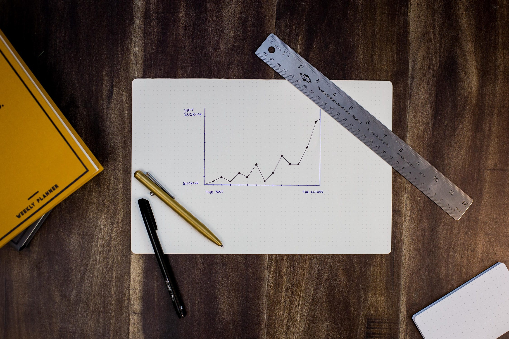

2.단기 목표
"나는 경제적 자유를 가진다."
그러기 위해서,매일 해야할 생각과 행동들을 실천하고 기록하겠다.

독서
- 경제 자기경영 투자 관리 : 올해 관련 책 70권 이상 읽고 전문가 되기.- 내가 좋아하는 것들 : 카페(커피) 인테리어 꽃 음식 여행(캠핑) 분야 공부해서 전문가 되기.
->관련책 100권이상 읽기
- 시간날 때마다 독서하고 정리 요약하여 내 것으로 만들기(아웃풋)
->일주일에 책 2권이상
- 백만장자 마인드 가지기
->한 달에 한 번 ‘시크릿 백만장자’ 다시 읽기
건강
- 오빠와 아침 운동->일주일에 20km이상, 한 달에 100km 달성
-실내 암벽등반 마스터 하기.
자기 계발
- 추월차선으로 돈 벌기 :나만의 브랜드를 만들기 위한 기초단계로 어플리케이션 개발을 위한 코딩을 배워서 실제로 어플을 만든다.
->올해 12월 31일까지.
- 비전보드 만들기
->올해 05월 31일까지
- 겨울 캠핑 가기
->5월16일~18일
->6월달 2주간
마인드
- 환경 생각하기->사소한 것 하나씩 실천하기(플라스틱 사용 줄이기, 전기 가스 물 절약하기 등)
자산
- 미니멀라이프 생활 지향하기(정말 필요한 것만 소비하고 지출 줄이기)- 분기별로 주식 재분배하기, 순자산 계산하기